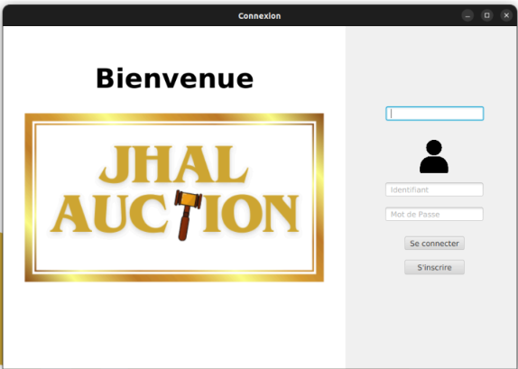
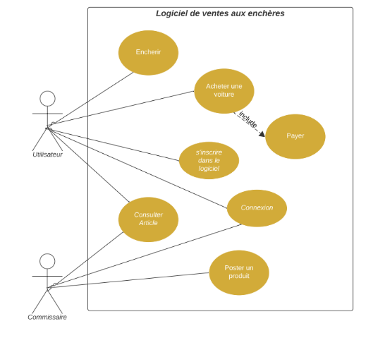
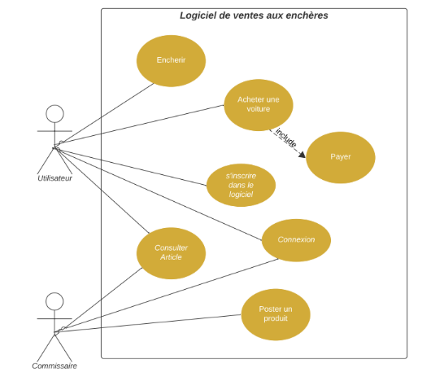

Un semestre d’enchères et de défis
Ce projet, c’est bien plus qu’une simple salle des ventes. Pendant un semestre entier, notre équipe a jonglé entre modélisation, conception, prises de décisions… et parfois de vraies divergences d’opinion.
Tout a commencé avec une idée simple : créer une plateforme d’enchères en ligne, avec des utilisateurs, des véhicules, et un commissaire priseur. Facile à dire ! Mais dès la phase d’implémentation, nous avons réalisé que notre première modélisation ne couvrait pas tous les cas... Il a fallu revenir à la planche à dessin, discuter, négocier, et trouver un terrain d’entente.
De mon côté, la connexion en temps réel entre les messages réseau et l’interface graphique fut un vrai casse-tête. Il a fallu synchroniser JavaFX avec UDP et des threads. Mais grâce à l’aide du groupe, on a pu tout faire marcher. C’est ce genre de complexité qu’on aime... après l’avoir résolue !
Auteurs
Assia AIT TALEB, Loraine DICKO, Hoda DOUBLI, Joëlle FARHAT
Date : Décembre 2024
GM4 - INSA Rouen
Objectif
Créer une salle des ventes interactive où les utilisateurs peuvent s’inscrire, consulter les offres disponibles et participer à des enchères en direct.
Structure du projet
| Dossier / fichier | Fonction |
|---|---|
| Communication/ | Messages UDP (sérialisation, écoute, diffusion) |
| ServeurEnchere.java | Serveur UDP, communication réseau + base SQLite |
| Utilisateur.java | Client (inscription, enchères, réclamations) |
| Commissaire.java | Ajout de véhicules, animation des enchères |
| DataBase.java | Gestion des tables (offres, utilisateurs...) |
| FXML + Controller | Interface graphique JavaFX (menus, offres, réclamations) |
Fonctionnalités techniques
- UDP multicast pour la synchronisation en temps réel entre clients
- JavaFX pour une interface fluide
- Base SQLite pour la persistance des utilisateurs, offres, historiques
- SHA-256 pour le hachage des mots de passe
- Requêtes asynchrones pour l’interface
Captures d’écran et diagrammes
 
